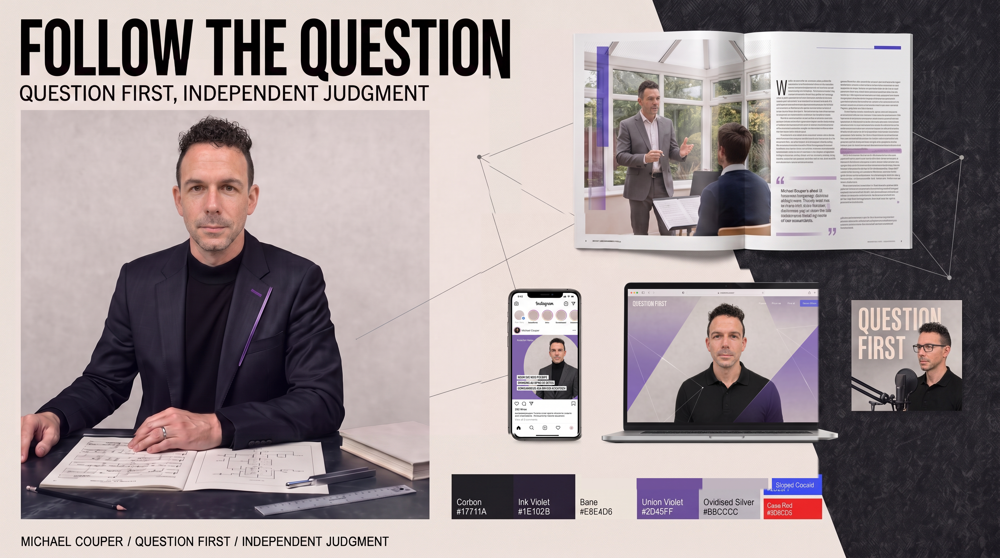
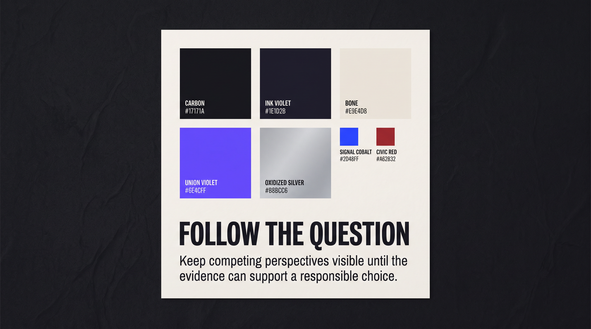

Section B
Creative Direction
See the creative direction behind your brand.
01
Creative Direction
Direction name
Counterpoint
The idea in one sentence
Make Follow the question physical. Two translucent perspectives stay independently legible, and where they genuinely overlap a third color appears that neither field holds alone.
How it should feel
Quiet, exact, artistic, serious, cultivated, and independently minded.
What to avoid
Academic costume, generic premium styling, mystical decoration, founder theater, political badging, or a music identity with no wider field.
02
Stylescape
What the board demonstrates: quiet exactness, dark wool and bone paper, and translucent color as the one material event.

03
Brand in use

- Carbon and Bone as the default high-contrast pair
- The Seam as tiny translucent purple glass along a real host line, never a logo
- Archivo Narrow headlines with Archivo body copy
- Seam Violet as the one chromatic event, never a purple wash
04
Keep it consistent
Always do
- Show Michael inside inquiry: desk evidence, teaching, or media
- Keep rational structure and artistic material depth in visible tension
- Use the approved face canon and the primary turtleneck outfit
Avoid
- Professor cosplay, music-only reduction, and generic luxury
- Question-mark symbols, labeled Venns, and consulting diagrams
- Purple mysticism washes, neon cyberpunk, and invented logos
See Look and Feel, Brand Signature, Voice and Writing, and Personal Branding for exact rules.